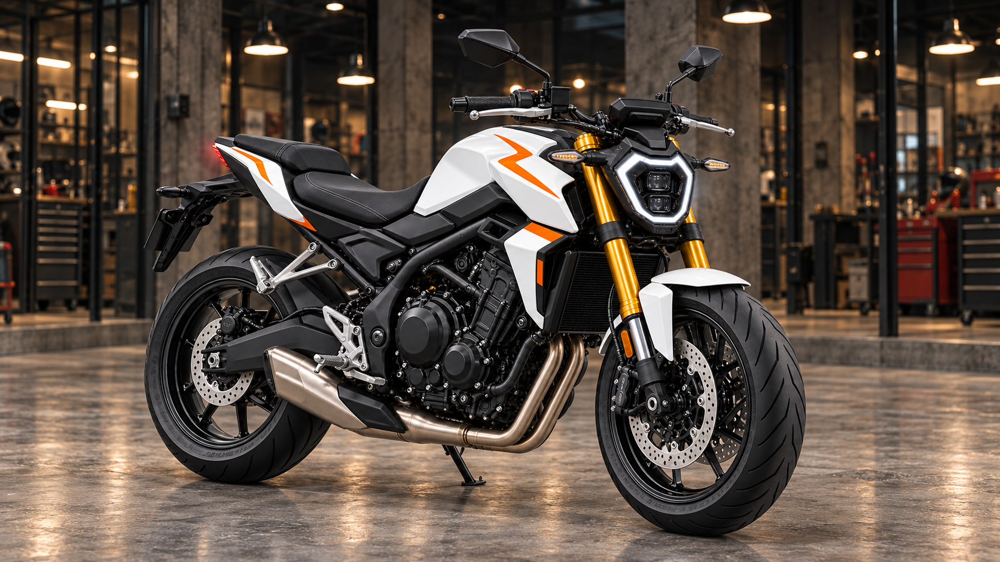

NAKED / TRE CILINDRI
V650-NK.
ISTINTO.
SENZA FILTRI.
Compatta, tagliente, pronta a cambiare direzione. Una naked sportiva di media cilindrata con un tre cilindri dall’erogazione corposa.
ESPLORA LA SCHEDA
649cm³
CILINDRATA
115CV
POTENZA MASSIMA
70Nm
COPPIA MASSIMA
196kg
IN ORDINE DI MARCIA
LA MOTO, NEL DETTAGLIO
SCHEDA TECNICA.
Motore e trasmissione
- Architettura
- Tre cilindri in linea trasversale, 4 tempi
- Cilindrata
- 649 cm³
- Distribuzione
- DOHC, 12 valvole
- Raffreddamento
- A liquido
- Alimentazione
- Iniezione elettronica ride-by-wire
- Potenza massima
- 115 CV (84,6 kW) a 11.500 giri/min
- Coppia massima
- 70 Nm a 8.750 giri/min
- Cambio
- 6 marce
- Frizione
- Assistita e antisaltellamento
- Quickshifter
- Bidirezionale
- Trasmissione finale
- A catena
Telaio e sospensioni
- Telaio
- Perimetrale in alluminio
- Sospensione anteriore
- Forcella rovesciata da 41 mm regolabile
- Sospensione posteriore
- Monoammortizzatore regolabile
Freni, ruote e pneumatici
- Freno anteriore
- Doppio disco da 310 mm, pinze radiali a 4 pistoncini
- Freno posteriore
- Disco da 220 mm, pinza a 2 pistoncini
- ABS
- Di serie
- Cerchi
- In lega da 17″
- Pneumatico anteriore
- 120/70 ZR17
- Pneumatico posteriore
- 180/55 ZR17
Dimensioni e capacità
- Interasse
- 1.405 mm
- Altezza sella
- 825 mm
- Serbatoio
- 15,5 l
- Massa in ordine di marcia
- 196 kg
TECNOLOGIA E CARATTERE
AL TUO FIANCO.
Elettronica e dotazioni
- Tre modalità di guida
- Controllo di trazione regolabile
- Quickshifter bidirezionale
- Strumentazione TFT da 5″
- ABS
- Ride-by-wire
Il carattere della moto
Il tre cilindri da 649 cm³ eroga 115 CV e 70 Nm, con un carattere sportivo che invita a cercare la prossima curva. Il telaio in alluminio, il quickshifter bidirezionale e il controllo di trazione regolabile completano una naked compatta e reattiva.